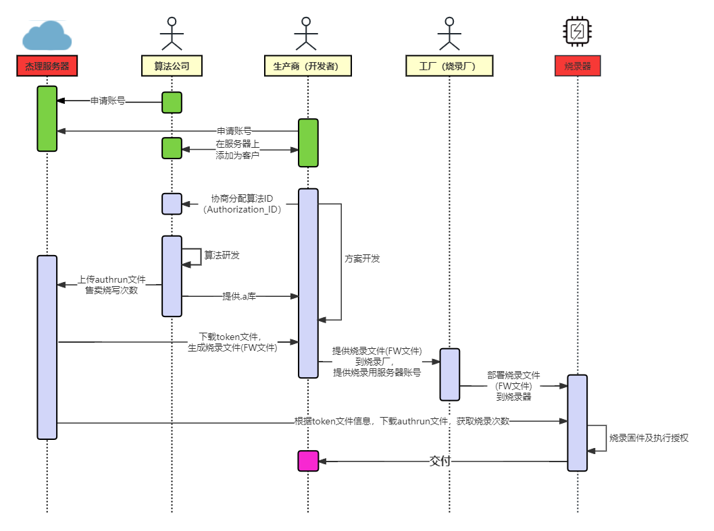
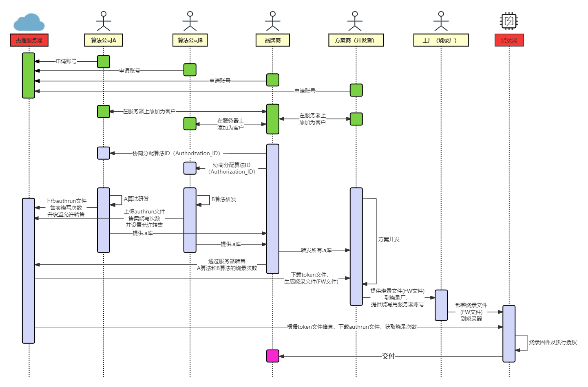

4.1. 多算法授权介绍
什么是多算法授权？
多算法授权，指的是，在一个 SDK 中，使用了多个算法提供商的库函数。
且这些算法提供商，都需要控制芯片的烧录次数。（即，这些算法提供商是按生产的样机个数收取费用）
多算法授权最简单的使用场景下，一般会有以下三种角色：
算法提供商：算法公司，提供算法库
方案开发商：生产商，即开发者，集成各家算法，并最终生成烧录文件(FW文件)
方案烧录商：烧录厂，被委托进行实际生产的工厂
在这种场景下，多算法授权的大致流程如下：

在很多时候，多算法授权的使用场景，会出现其他角色。比如生产商的需要做的事情，由多种角色（公司）共同完成。
可能会出现以下几种角色：
方案的主导者：品牌商，方案的规则者，
方案算法提供商：算法公司A、算法公司B
方案实际开发商：方案商
方案烧录商: 工厂
在这种场景下，多算法授权的大致流程如下：

Note
第三方音效算法接入介绍文档：点击查看